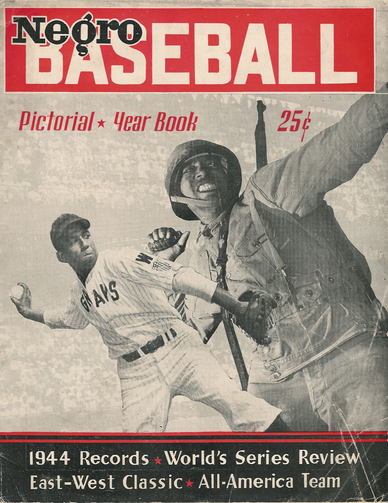

This cover of the Negro Baseball Pictorial Yearbook (1944 edition) features Homestead Grays player Earnest Spoon Carter mid-pitch, paired with the image of a WWII soldier. According to the NLBM, this pairing highlights the irony of segregation in baseball during World War II. Black soldiers were risking their lives overseas in the war, while not being allowed to compete in the segregated Major Leagues at home.